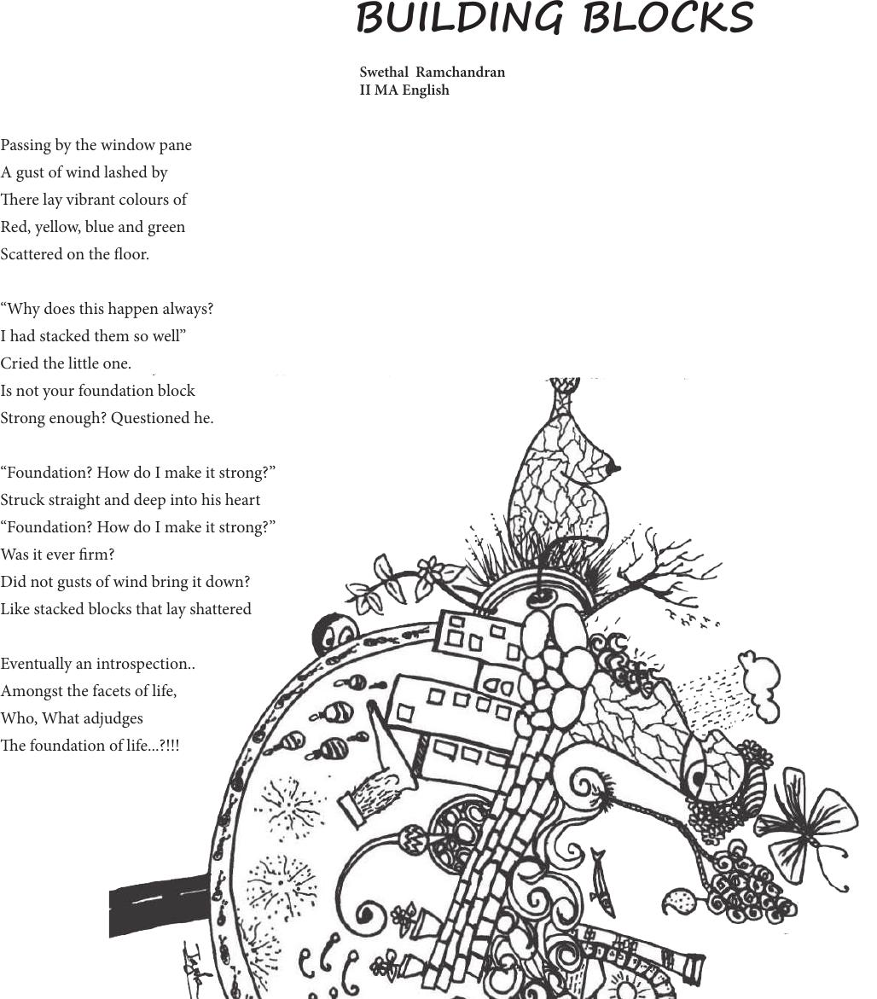

Passing by the window pane
A gust of wind lashed by
ere lay vibrant colours of
Red, yellow, blue and green
Scattered on the oor.
“Why does this happen always?
I had stacked them so well”
Cried the little one.
Is not your foundation block
Strong enough? Questioned he.
“Foundation? How do I make it strong?”
Struck straight and deep into his heart
“Foundation? How do I make it strong?”
Was it ever rm?
Did not gusts of wind bring it down?
Like stacked blocks that lay shattered
Eventually an introspection..
Amongst the facets of life,
Who, What adjudges
e foundation of life...?!!!
BUILDING BLOCKS
Swethal Ramchandran
II MA English